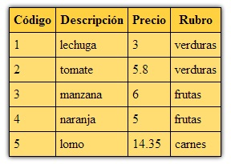

Ahora implementaremos el listado completo de la tabla articulos y recuperaremos la descripción del rubro que se encuentra en la otra tabla.
Tenemos que utilizar el comando select y la cláusula join para el emparejamiento con la tabla rubros.
El código completo de la página es:
<!doctype html>
<html>
<head>
<title>Listado de artículos</title>
<style>
.tablalistado {
border-collapse: collapse;
box-shadow: 0px 0px 8px #000;
margin:20px;
}
.tablalistado th{
border: 1px solid #000;
padding: 5px;
background-color:#ffd040;
}
.tablalistado td{
border: 1px solid #000;
padding: 5px;
background-color:#ffdd73;
}
</style>
</head>
<body>
<?php
$mysql=new mysqli("localhost","root","","base1");
if ($mysql->connect_error)
die("Problemas con la conexión a la base de datos");
$registros=$mysql->query("select ar.codigo as codigoart,
ar.descripcion as descripcionart,
precio,
ru.descripcion as descripcionrub
from articulos as ar
inner join rubros as ru on ru.codigo=ar.codigorubro") or
die($mysql->error);
echo '<table class="tablalistado">';
echo '<tr><th>Código</th><th>Descripción</th><th>Precio</th><th>Rubro</th></tr>';
while ($reg=$registros->fetch_array())
{
echo '<tr>';
echo '<td>';
echo $reg['codigoart'];
echo '</td>';
echo '<td>';
echo $reg['descripcionart'];
echo '</td>';
echo '<td>';
echo $reg['precio'];
echo '</td>';
echo '<td>';
echo $reg['descripcionrub'];
echo '</td>';
echo '</tr>';
}
echo '<table>';
$mysql->close();
?>
</body>
</html>
Creamos alias para los campos que tienen el mismo nombre en las tablas de articulos y rubros. También creamos alias para las dos tablas con las que trabajamos.
En el from indicamos la tabla principal que estamos consultando que es la tabla articulos y luego con la cláusula inner join procedemos a indicar el nombre de la tabla relacionada y los dos campos por los que se emparejan: ru.codigo=ar.codigorubro
Luego dentro del while debemos hacer referencia a los alias que hemos creado:
while ($reg=$registros->fetch_array())
{
echo '<tr>';
echo '<td>';
echo $reg['codigoart'];
echo '</td>';
echo '<td>';
echo $reg['descripcionart'];
echo '</td>';
echo '<td>';
echo $reg['precio'];
echo '</td>';
echo '<td>';
echo $reg['descripcionrub'];
echo '</td>';
echo '</tr>';
}
En el navegador obtenemos una salida similar a esta:
Podemos no utilizar alias y acceder por medio de un índice numérico a cada columna de los campos que recupera el select:
$registros=$mysql->query("select ar.codigo as codigoart,
ar.descripcion as descripcionart,
precio,
ru.descripcion as descripcionrub
from articulos as ar
inner join rubros as ru on ru.codigo=ar.codigorubro") or
die($mysql->error);
echo '<table class="tablalistado">';
echo '<tr><th>Código</th><th>Descripción</th><th>Precio</th><th>Rubro</th></tr>';
while ($reg=$registros->fetch_array())
{
echo '<tr>';
echo '<td>';
echo $reg[0];
echo '</td>';
echo '<td>';
echo $reg[1];
echo '</td>';
echo '<td>';
echo $reg[2];
echo '</td>';
echo '<td>';
echo $reg[3];
echo '</td>';
echo '</tr>';
}
echo '<table>';
Como vemos ahora hacemos referencia a cada elemento por medio de un subíndice numérico que indica la posición del campo en el select: echo $reg[0];
La primer posición es la cero, luego sigue la uno y así sucesivamente.
NO PODEMOS indicar en el subíndice una cadena con el carácter punto: echo $reg['ar.descripcion'];
Copiar el contenido de este cuadro de texto al NotePad++ y grabarlo en la carpeta c:\wamp\www con un nombre con extensión php (si hay varios cuadros
de texto grabar cada uno en un archivo distinto).
luego abrir el navegador (Chrome, FireFox, IExplorer etc.) y en la barra de direcciones tipear: http://localhost/pagina1.php (o el nombre del
archivo que le dió)